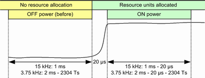
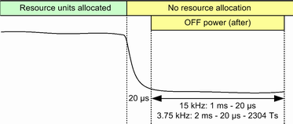
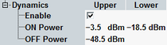

Transmission at excessive uplink power increases interference to other channels. A too low uplink power increases transmission errors. 3GPP defines a general ON/OFF time mask. The mask contains limits for the UL power in slots not used for transmission (transmit OFF power), slots used for transmission (transmit ON power) and the power ramping between them.
- ON power, at the beginning of the first allocated resource unit
- OFF power before the ON power
- OFF power after the last allocated resource unit
The measurement duration for the three powers depends on the subcarrier spacing. For 3.75 kHz subcarrier spacing, each power must be measured for 2 ms (one slot). For 15 kHz subcarrier spacing, each power must be measured for 1 ms (two slots).
There is a transient period of 20 µs at the beginning of the first allocated resource unit and after the last allocated resource unit. These transient periods are excluded from the measurement.
For 3.75 kHz subcarrier spacing, the 2304 Ts gap at the end of each slot, when the UE is not transmitting, is also excluded.
The following figure provides an overview of the relevant time intervals. The power dynamics measurement determines the ON power, the OFF power (before) and the OFF power (after), using the indicated time intervals.


The OFF power must not exceed -48.5 dBm. The ON power must be between -18.5 dBm and -3.5 dBm. The limits can be set in the configuration dialog.
